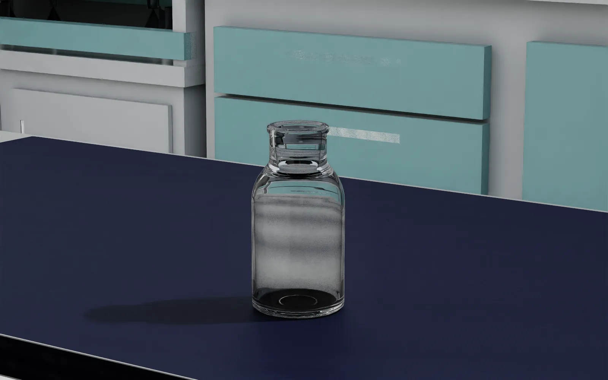
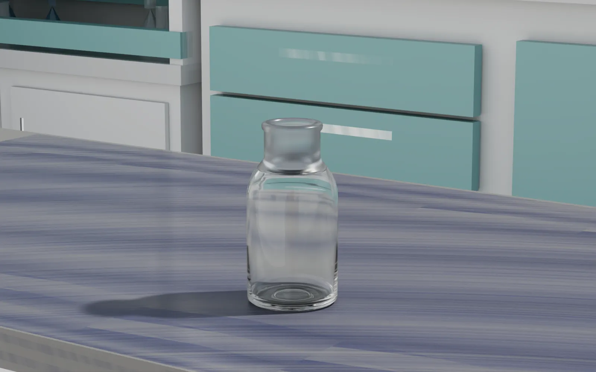
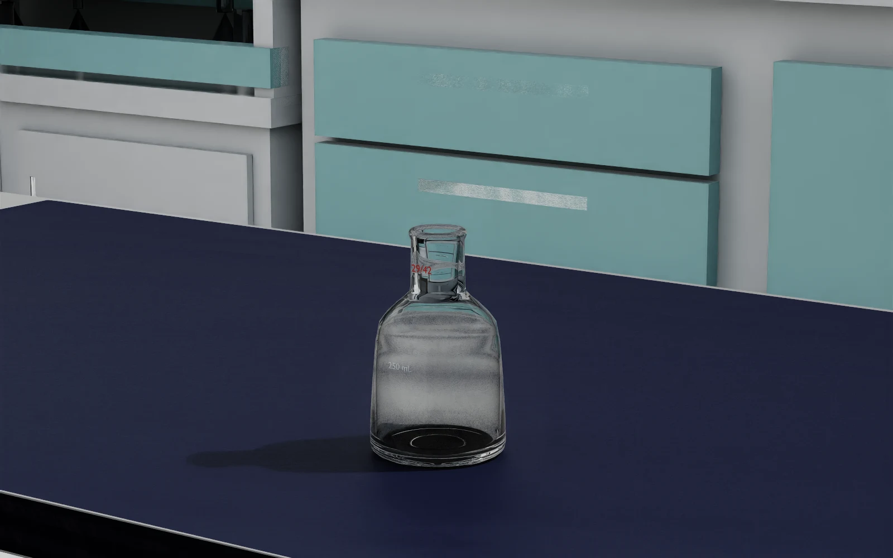
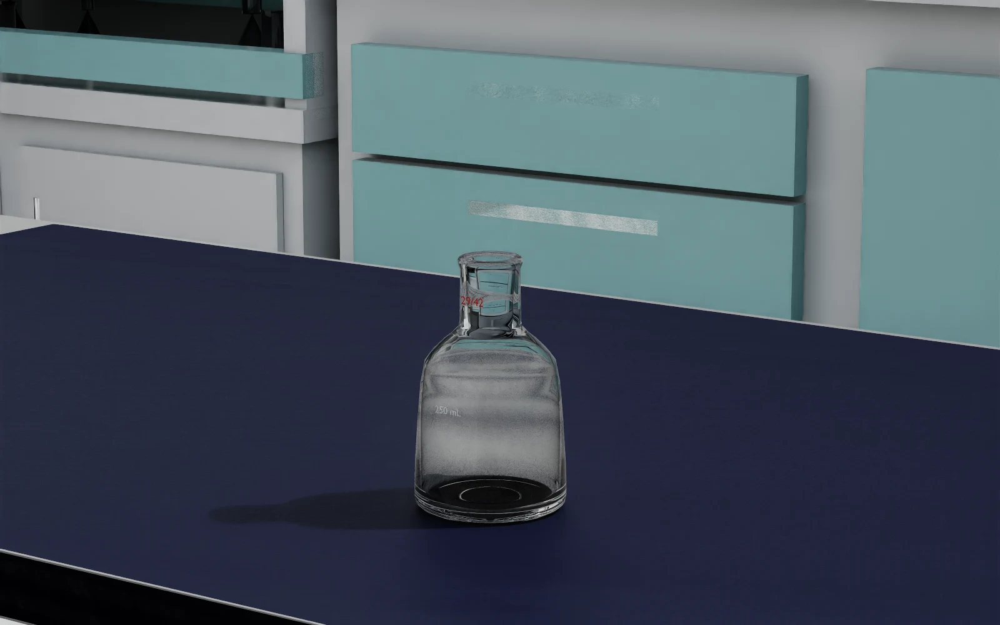
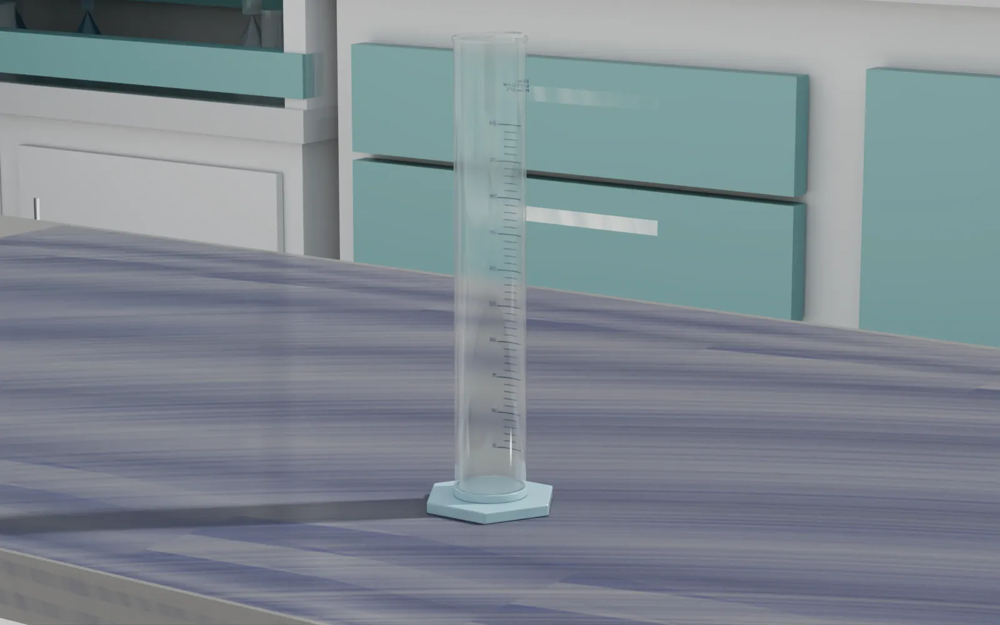
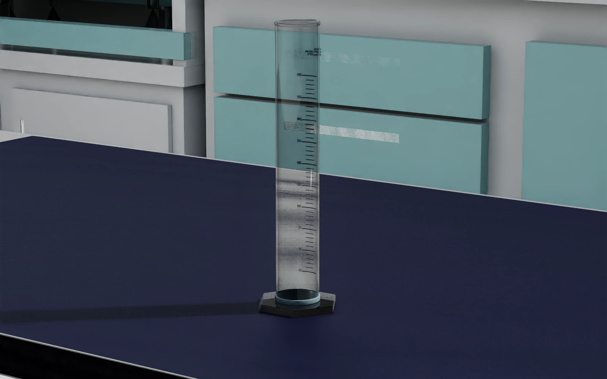
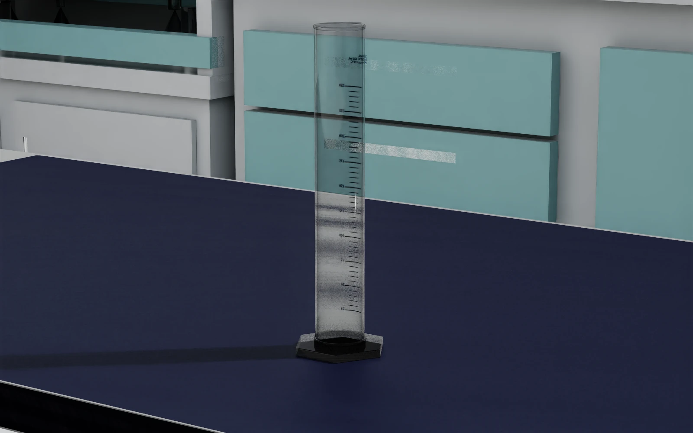
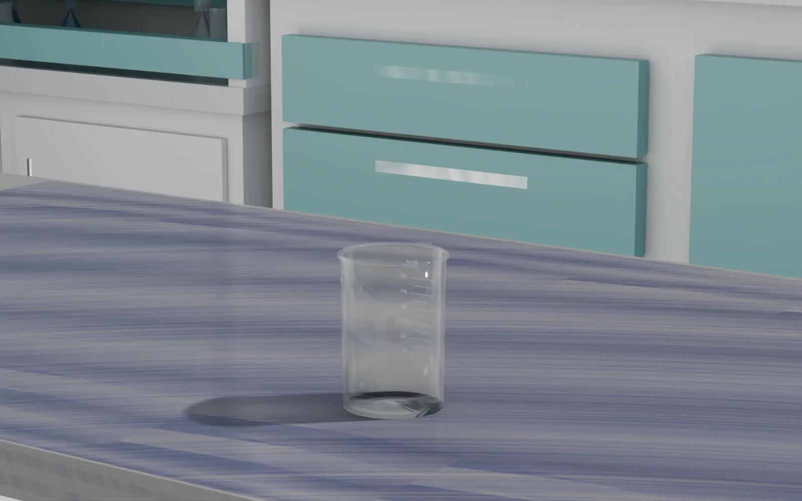
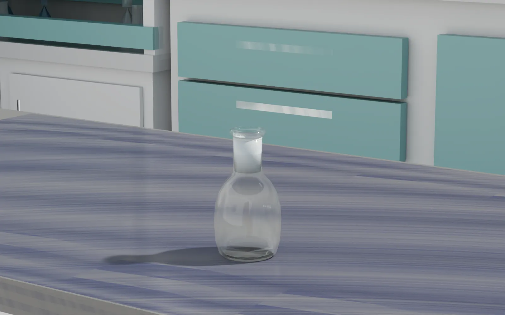
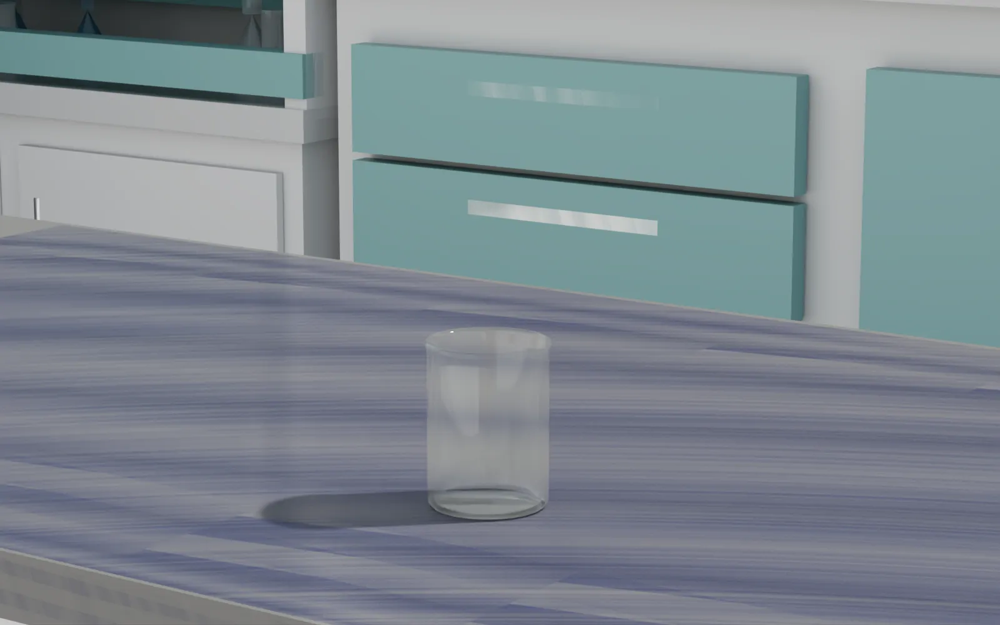

试剂瓶 90×55
原始 SimReady 材质直通；瓶口不再发白

1 · 试剂瓶本体 · RTL 
2 · 试剂瓶本体 · PathTracing
VISUAL MATERIAL / 正式准入标准 · 让实验玻璃真正像玻璃
量筒、烧杯、平底烧瓶和动态烧杯按本页完整 OmniGlass 状态正式打包；量筒 v2 已将筒身与六角底之间的圆形连接座也纳入玻璃绑定。试剂瓶与锥形瓶保留生产者原始 SimReady 材质。六件资产都已通过 Isaac Sim 4.1 准入与固定机位视觉审查。
从原始一路看到 PathTracing ↓本页现在不是“效果预览”，而是正式视觉基线：四件现有器皿复现网页配方，两件生产者器皿原材质直通；结构门禁与肉眼门禁缺一不可。
01 / 先说人话
网页的房间、桌子、相机、灯光和可见材质效果共同组成视觉准入基线。manifest 全绿但图片发黑、发白或不透明，仍然不算通过。
glass_web_standard_v2：量筒使用补齐圆形连接座的 v2，其余五件复用已通过的 v1。旧任务 USD 没有被悄悄覆盖，后续任务升级必须显式换包。02 / 同机位实景对照
全部使用同一间现代湿实验室、同一张 2000×800×755 mm 工作台、同一相机、灯光与物体 pose。四组滑杆的右侧已更新为最终准入包；试剂瓶与锥形瓶则对照生产者原始 SimReady 资产与打包后结果。
原始 SimReady 材质直通；瓶口不再发白


生产者原资产与最终准入包，同机位核对


网页玻璃标准 v2 · 圆形连接座不再保留青色 PP



连接座专项复核：v1 只替换了筒身、内底、杯口、倾倒嘴和六角外底，因此中间圆圈仍是青色半透明 PP；v2 将独立的 Base_Connector/Cylinder_005 也绑定到同一套 ClearBorosilicate。深色来自厚玻璃贴近深蓝桌面的反射，不是黑色材质回退。


旧材质 → 同一组硼硅 OmniGlass → PathTracing



只叠瓶身与卷边；29/42 磨口仍保留磨砂



液体任务用的动态杯体也叠同一组参数



03 / 可复现配方
glass_color0.99reflection_color1.0frosting_roughness0.035极轻的表面粗糙glass_ior1.47硼硅玻璃，不是默认 1.491thin_walledfalse按厚壁折射，不走单面depth0.0022 mm 体积吸收enable_opacityfalse沿用网页证据层的非透明度通道模式cutout_opacity0.0明确写入，不再依赖旧包继承roughness_texture_influence1.0保留网页参考中的粗糙度纹理影响前六项来自 manual_glassware_v1 的 ClearBorosilicate shader；后三项原先由网页参考所用的 glass_v1 材质继承。正式 profile 现在把九项全部写明，不再靠隐式继承。
现有四件器皿使用完整网页 profile；试剂瓶与锥形瓶直接保留原始 SimReady ClearBorosilicate、GroundGlass、标记与 GeomSubset 绑定。
04 / 工程边界
source-bound profile 或原材质保真路线、Typed MDL inputs、OmniGlass 闭包、Isaac 4.1 准入。
严格消费六个不可变 package，打统一交付 ZIP，组织 A/B 证据与文档；不重写转换逻辑。
需要时显式发布新的 Task 版本。不会把材质变更悄悄塞回旧任务包。
量筒 v2 与另外三个覆盖包均有 visual-material-only audit；两个原材质包均有 visual-preservation fingerprint。六件全部通过 Isaac 4.1 runtime 与固定机位肉眼审查，但本轮没有升级任务 USD。
05 / 本轮刻意不做